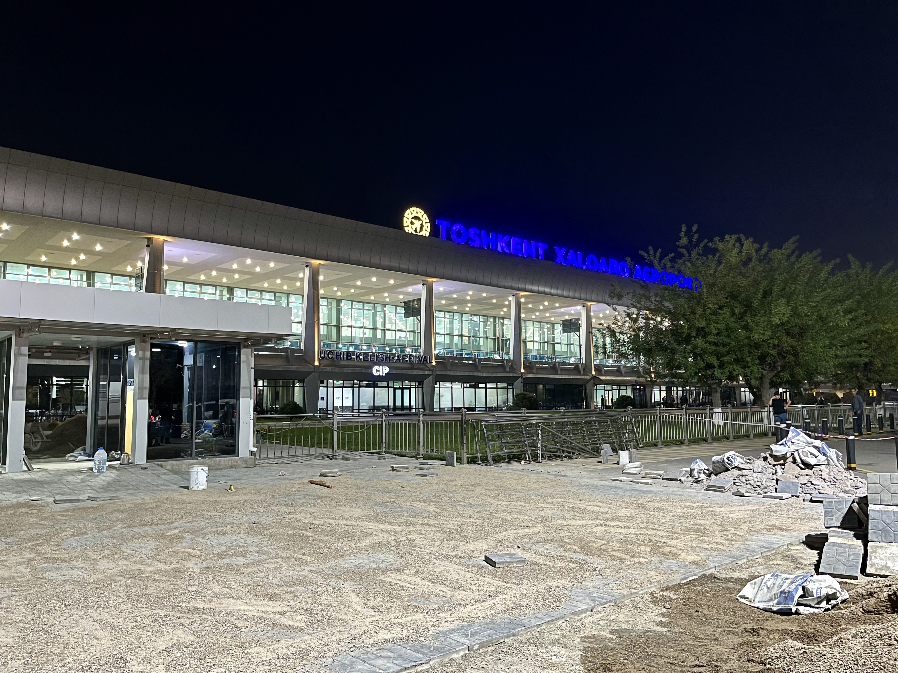

Oʻzbek migratsiyasining toʻrtinchi toʻlqini (2010-yillardan hozirgacha): yoʻnalishlarning kengayishi
Mustaqillikdan keyingi uchinchi toʻlqin (1991–2010) deyarli butunlay Rossiyaga qaratilgan edi. 2010-yillardan boshlab oʻzbek mehnat migratsiyasi yangi — toʻrtinchi — bosqichga oʻtdi: yoʻnalishlar Janubiy Koreya, Turkiya, Germaniya/Yevropa, Koʻrfaz davlatlari va Yaponiyaga kengaydi, davlat tomonidan tashkil etilgan qonuniy migratsiya kuchaydi. Bu toʻlqin uchinchisining davomidir. Quyida faqat tasdiqlangan raqamlar va sanalar bilan.

Bu maqola oʻzbek migratsiyasi toʻlqinlari seriyasining davomidir: avval birinchi (1917–1934), ikkinchi (1940–1960) va mustaqillikdan keyingi uchinchi (1991–2010) toʻlqinlar yoritilgan edi. Uchinchi toʻlqin deyarli butunlay Rossiyaga qaratilgandi. 2010-yillardan esa yoʻnalishlar kengayib, davlat ishtirokidagi qonuniy migratsiya kuchaygan toʻrtinchi bosqich shakllandi. Quyida bu bosqich faqat tasdiqlangan manbalar, raqamlar va sanalar asosida bayon etiladi.
Toʻrtinchi toʻlqin nima
Toʻrtinchi toʻlqinning mohiyati — migratsiyaning bir yoʻnalishdan (Rossiya) koʻp yoʻnalishli boʻlib ketishi va stixiyali mehnatdan davlat tashkil etgan qonuniy jarayonga oʻtishi. Maʼlumotlarga koʻra, 2023-yil oxirida Oʻzbekistonning chet eldagi mehnat migrantlari 2 milliondan sal koʻp boʻlgan; shundan taxminan 1,2 million (qariyb 60%) Rossiyada edi. Bu koʻrsatkich 2024-yil oxiriga kelib ~1,35 milliongacha (taxminan 34% ga) kamaygan, Rossiyadagilar soni esa ~698 mingga tushgan.
Rossiya hukmronligi va nega oʻzgarish boshlandi
Uzoq vaqt Rossiya deyarli yagona manzil boʻlib keldi. 2014–2015-yillardagi rubl inqirozi (Gʻarb sanksiyalari, neft narxining tushishi va rublning ikki marta qadrsizlanishi) migrantlar sonini ham, pul oʻtkazmalarining qattiq valyutadagi qiymatini ham kamaytirdi; 2015-yilda Rossiyaga migratsiya ~15,6% ga qisqargan. 2020–2021-yillardagi COVID-19 pandemiyasi chegaralarni yopib, bir milliondan ortiq oʻzbekistonlikni Rossiyada qoldirdi. 2022-yildan keyingi vaziyat (urush, safarbarlik xavotiri, Rossiyadagi qattiqlashgan qoidalar) ketishni tezlashtirdi — faqat 2024-yilning yanvar–oktabr oylarida ~115 ming kishi vatanga qaytgan.
Yoʻnalishlarning kengayishi
Janubiy Koreya: Oʻzbekiston 2006-yildan beri Koreyaning Employment Permit System (EPS) sheriklik mamlakati boʻlib, har yili tarmoqlar boʻyicha kvota oladi; 2023-yil oxirida u yerda ~68,1 ming oʻzbek boʻlgan. Turkiya: 2023-yilda ~114–120 ming kishi bilan yirik manzillardan biri. Germaniya/Yevropa: Germaniya va Oʻzbekiston 2024-yil 16-sentabrda Samarqandda migratsiya va harakatchanlik boʻyicha keng qamrovli sheriklikni imzoladi — bu malakali kadrlar (ayniqsa tibbiyot) uchun yoʻlni osonlashtirdi. Yaponiya: 2019-yil 17-dekabrda Yaponiyaning “Specified Skilled Worker” dasturi boʻyicha bitim imzolanib, 14 tarmoq oʻzbek ishchilariga ochildi. Koʻrfaz davlatlari (BAA, Saudiya, Qatar): qurilish va xizmat koʻrsatish sohalarida tashkil etilgan dasturlar orqali ishchilar yuboriladi.
Davlat tomonidan tashkil etilgan migratsiya
2016-yildan keyingi islohotlar migratsiyani davlat nazoratidagi qonuniy tizimga aylantirdi. 2018-yilda Bandlik vazirligi huzurida Tashqi mehnat migratsiyasi agentligi tashkil etildi; shu yili Oʻzbekiston Xalqaro migratsiya tashkiloti (IOM) aʼzosi boʻldi. Migrantlar huquqlarini himoya qilish fondi tuzildi, ketishdan oldin kasb va til tayyorgarligi yoʻlga qoʻyildi, chet elda vakolatxonalar ochildi, qonuniy migratsiya uchun imtiyozli kreditlar joriy etildi. Natijada tashkiliy (uyushgan holda yuborilgan) ishchilar soni 2023-yildagi 38,4 mingdan 2024-yilda 161,8 minggacha oshdi.
Pul oʻtkazmalari
Jahon banki maʼlumotiga koʻra, 2023-yilda Oʻzbekistonga pul oʻtkazmalari ~16,1 mlrd dollarni (YaIMning ~17,8%) tashkil etgan — bu 2022-yildagi ~16,7 mlrd dollardan (~21%) biroz kam. Rossiyaning ulushi 2022-yildagi ~87% dan 2023-yilda ~78% ga tushgan, biroq hamon yetakchi boʻlib qolgan. Hisob-kitoblarga koʻra, pul oʻtkazmalarisiz mamlakatda kambagʻallik darajasi 9,6% oʻrniga 16,8% boʻlardi. 2024-yil yanvar–oktabrida Janubiy Koreyadan oʻtkazmalar ~70% oshib, 450 million dollardan oshgan.
Qaytish va reintegratsiya
Toʻrtinchi toʻlqinning yana bir belgisi — qaytish migratsiyasining kuchayishi. Agentlik va himoya fondi qaytganlarni ishga joylashtirish, huquqiy-ijtimoiy himoya va qiyin ahvolga tushgan migrantlarni vatanga qaytarish bilan ham shugʻullanadi. Faqat 2024-yilning yanvar–oktabrida ~115 ming kishi qaytgan.
Umumiy manzara
Shu tariqa toʻrtinchi toʻlqin oʻzbek migratsiyasini bir mamlakatga bogʻliqlikdan koʻp manzilli, qisman malakaga asoslangan va davlat tomonidan tartibga solinadigan jarayonga aylantirdi. Rossiya hamon eng yirik manzil boʻlib qolsa-da, Koreya, Turkiya, Yevropa, Koʻrfaz va Yaponiya kabi yoʻnalishlar ulushi ortib bormoqda.
Manbalar
- Gazeta.uz — Migrant statistics 2023–2024, destinations, remittances (Jan 2025)
- World Bank / Tashkent Times — Remittances to reach US$16.1bn in 2023 (~17.8% of GDP)
- CABAR.asia — Labour migration from Uzbekistan: institutions, Agency, reforms
- German Federal Ministry of the Interior (BMI) — Germany–Uzbekistan migration partnership, Samarkand, 16 Sept 2024